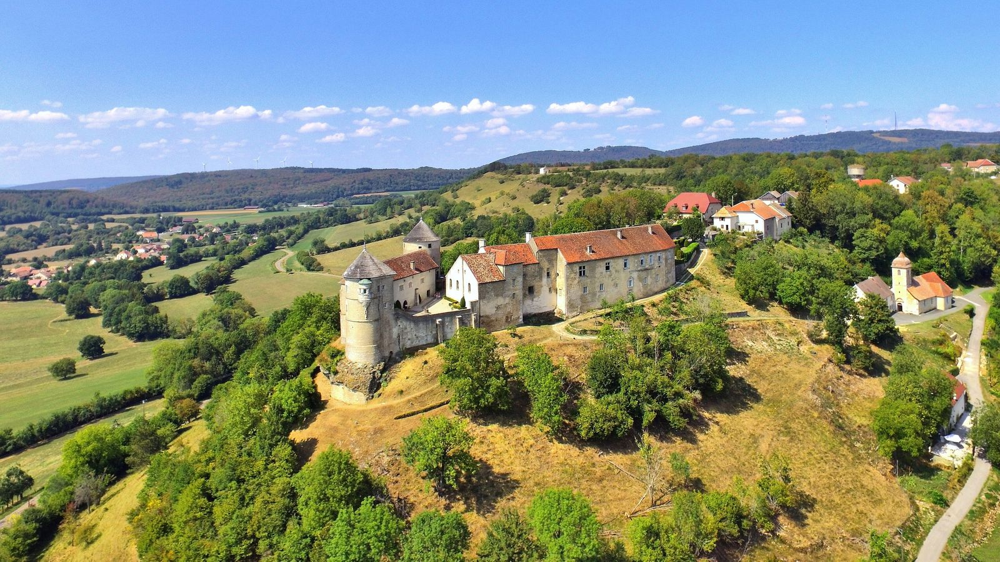
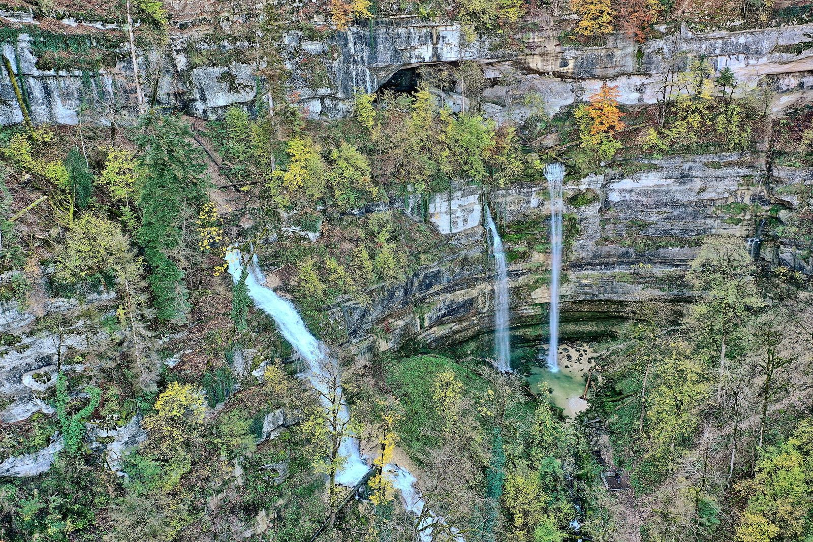
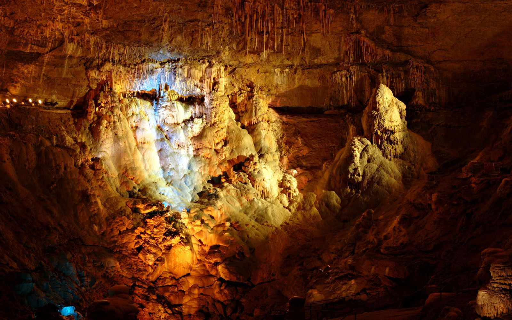
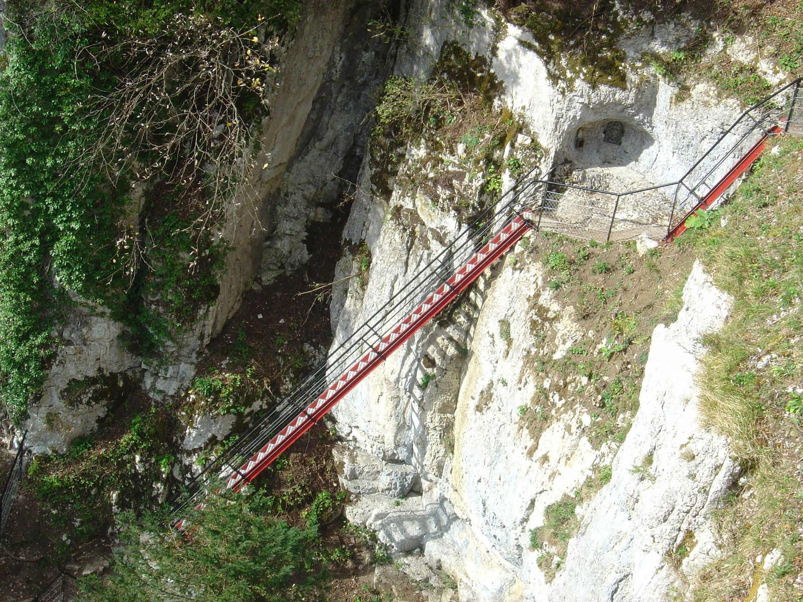
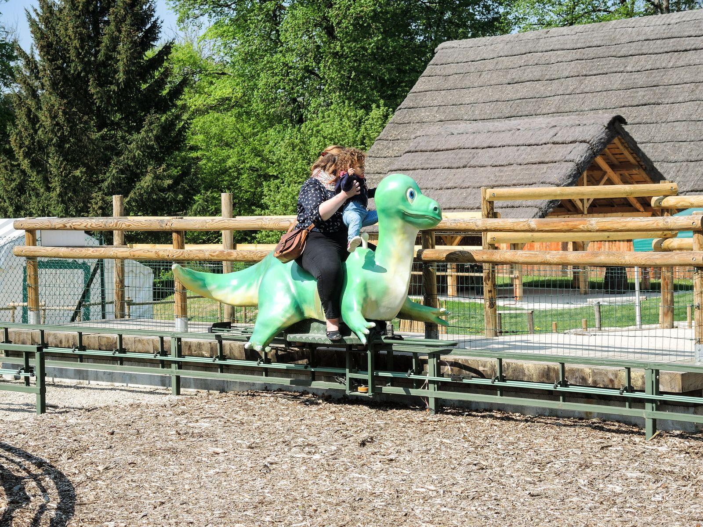
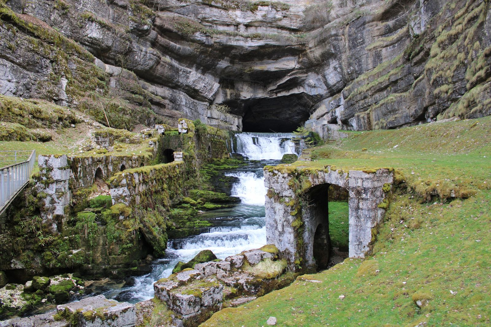
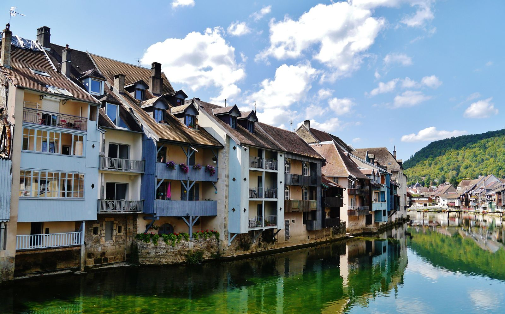
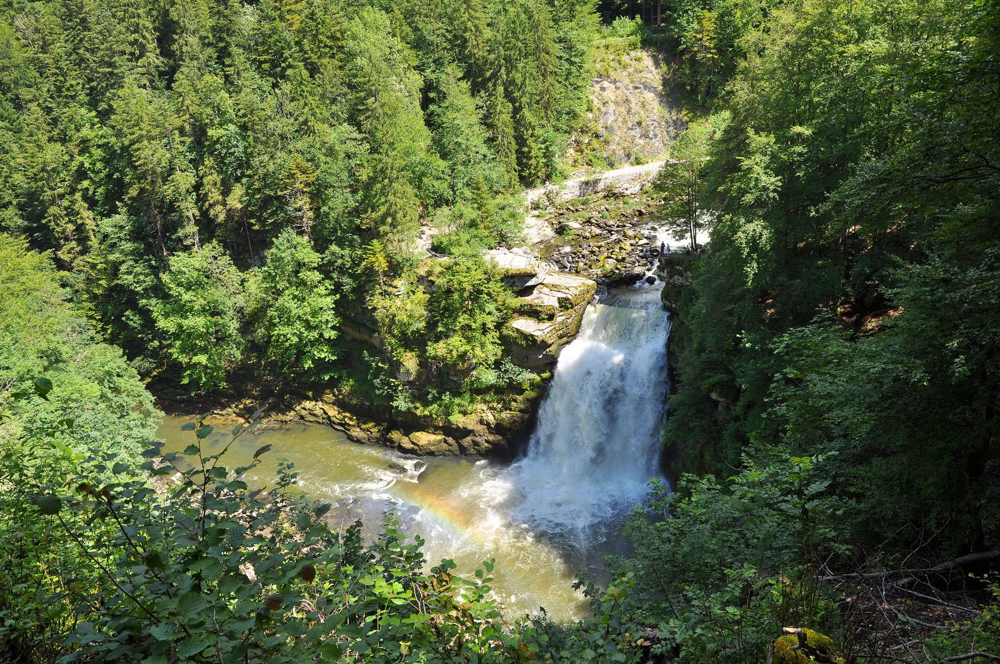
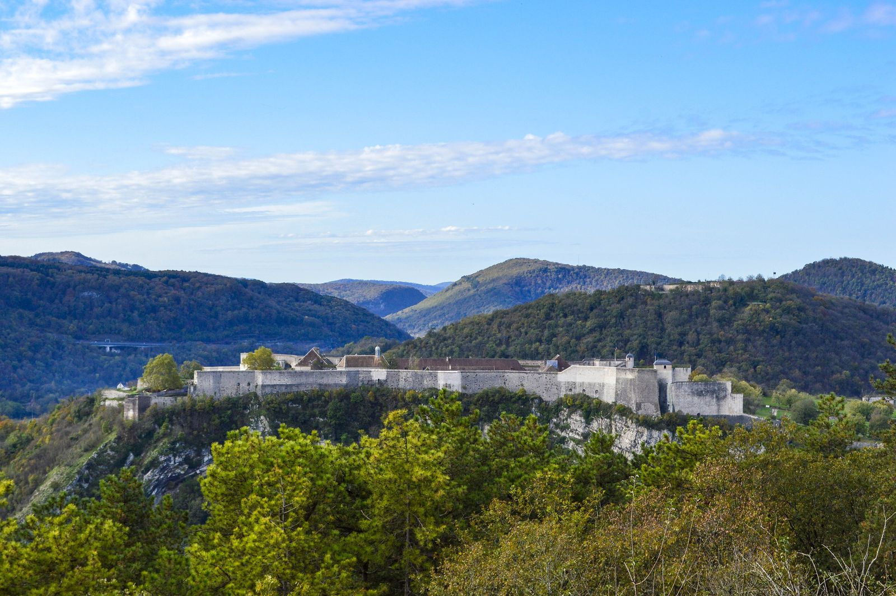
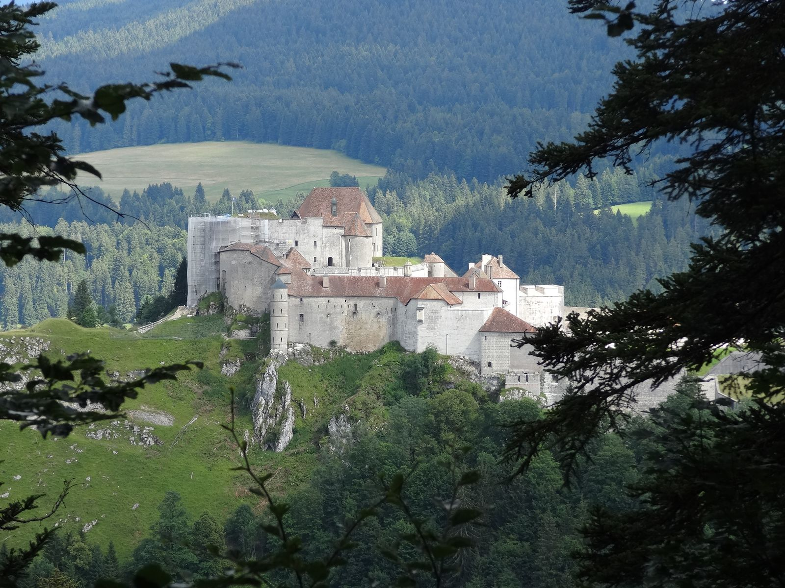

11 minChâteau de Belvoir
Un château médiéval perché au-dessus de la vallée, avec ses salles meublées à visiter.
À 10 km en voiture

Châteaux, cascades, gouffres et villages au bord de l’eau : de la plus proche à la plus lointaine, tout se fait dans la journée depuis le gîte.

11 minUn château médiéval perché au-dessus de la vallée, avec ses salles meublées à visiter.
À 10 km en voiture
Un cirque de falaises où naît le Dessoubre, ses cascades et le belvédère de la Roche du Prêtre.
À 19 km en voiture

39 minUne immense salle souterraine aménagée pour la visite, au milieu des stalactites.
À 40 km en voiture

40 minDes échelles métalliques accrochées à la falaise, au-dessus des gorges du Doubs, à la frontière suisse.
À 33 km en voiture

42 minUn parc de dinosaures grandeur nature dans la forêt, idéal avec les enfants.
À 44 km en voiture

49 minLa Loue jaillit d’une grotte au pied d’une haute falaise : un site que Gustave Courbet a peint.
À 49 km en voiture

51 minOrnans et ses maisons qui se reflètent dans la Loue : le village natal de Gustave Courbet et son musée.
À 52 km en voiture

52 minUne chute du Doubs au milieu des bois, à la frontière suisse, à rejoindre à pied ou en bateau depuis Villers-le-Lac.
À 44 km en voiture

62 minLa citadelle de Vauban domine Besançon. Inscrite au patrimoine mondial de l’Unesco, elle abrite des musées et un jardin zoologique.
À 62 km en voiture

66 minUne forteresse accrochée au rocher au-dessus de la cluse de Pontarlier, où fut emprisonné Toussaint Louverture.
À 66 km en voiture
Temps de route en voiture depuis le gîte, à titre indicatif.

Dites-nous vos dates et combien vous êtes : Carole vous répond sous 24 à 48 h.
Demander vos dates